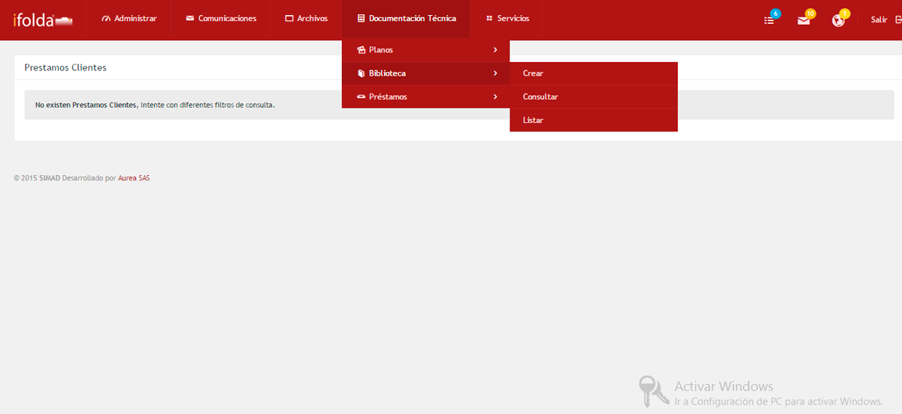
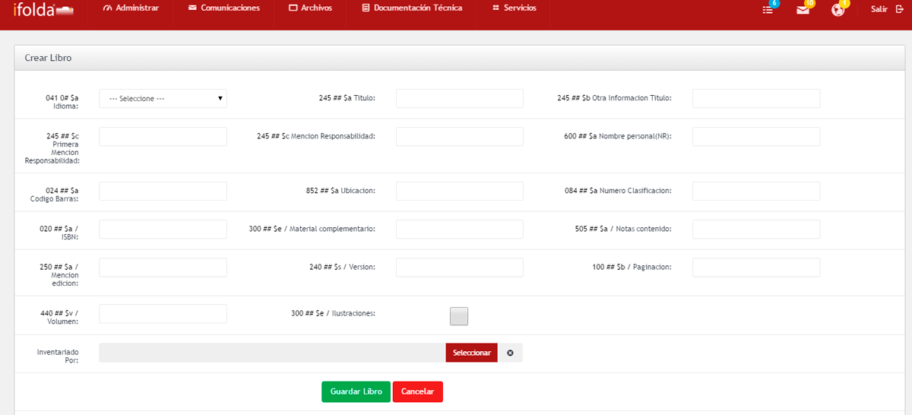
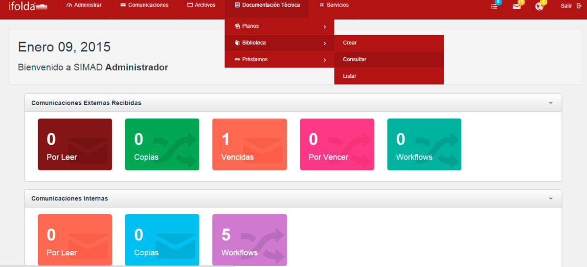
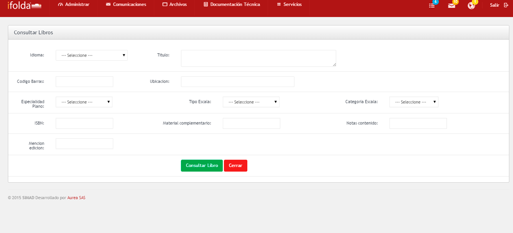
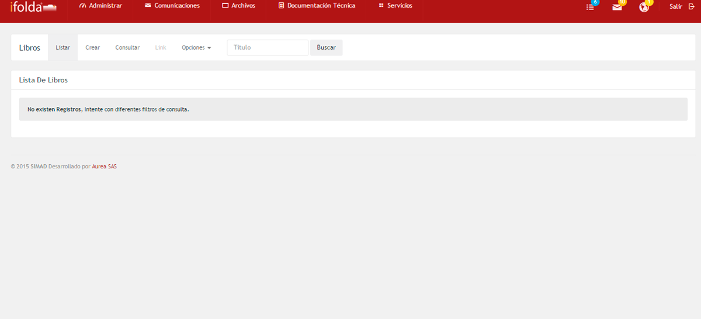

El módulo Biblioteca otorga el soporte que refleja toda la información visual, gráfica tomada de los datos de campo y traducida a imágenes representativas de estructuras y planos.
Crearir a inicio

Permite a los usuarios de SIMAD, crear información acerca de los Bibliotecas que posee la organización.
Para crear una biblioteca en el sistema SIMAD, realice alguno de los siguientes pasos:

Consultarir a inicio

Permite hacer consultas en el sistema SIMAD.
Para hacer una consulta en el sistema SIMAD, realice alguno de los siguientes pasos:

Listarir a inicio
Permite ver el listado de las Bibliotecas que se encuentran en creados en el sistema SIMAD.
Para ver e listado de Bibliotecas creadas en el sistema, realice los siguientes pasos:
